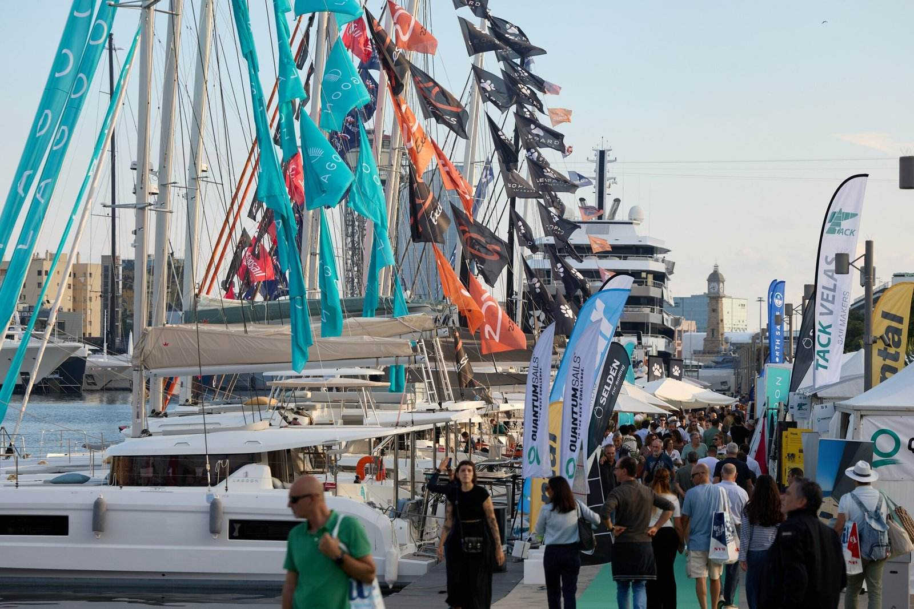

Conferences · Boat & Yacht
Barcelona International Boat Show 2027
- Dates
- –
- Venue
- Port Vell, Barcelona
- Location
- Barcelona, Spain
- Format
- In-person
- Category
- Boat & Yacht
- Industry
- Yachting
- Organiser
- Fira de Barcelona
- Official website
- https://www.salonnautico.com/en/
About
Spain's flagship international boat show in Barcelona's Port Vell.
Topics: boat show, yachting, marine.
No organiser attendance figure found on the official pages fetched 24 Nov 2026 for this upcoming edition. Ranked by our estimated size tier 'large' (30,000-100,000 attendees/visits), a judgement from format, venue and scale, not an official number.
Sources
Hotels
- Barcelona Apolo Affiliated by Melia — 4★ · Avinguda Paral·lel 57-59, 08004 Barcelona · 1.4 km from the venue · Price on request
- Eurostars Grand Marina Hotel — 5★ · Carrer Moll de Barcelona s/n, 08039 Barcelona · 0.5 km from the venue · Price on request
- H10 Marina Barcelona — 4★ · Avinguda Bogatell 64-68, 08005 Barcelona · 2.6 km from the venue · Price on request
- W Barcelona — 5★ · Plaça Rosa dels Vents 1, 08039 Barcelona · 0.3 km from the venue · Price on request
- Hotel Do Plaça Reial — 5★ · Plaça Reial 1, 08002 Barcelona · 1.5 km from the venue · Price on request
- Grums Barcelona — 4★ · Carrer Palaudaries 26, 08004 Barcelona · 1.3 km from the venue · Price on request
- The Serras — 5★ · Passeig Colom 9, 08002 Barcelona · 1.2 km from the venue · Price on request
- Hotel Brummell — 4★ · Carrer Nou de la Rambla 174, 08004 Barcelona · 1.7 km from the venue · Price on request
- The Wittmore — 5★ · Carrer Riudarenes 7, 08002 Barcelona · 1.4 km from the venue · Price on request
- Soho House — 5★ · Plaça Duc de Medinaceli (Ps. Colom, 20) 4, 08002 Barcelona · 1.1 km from the venue · Price on request